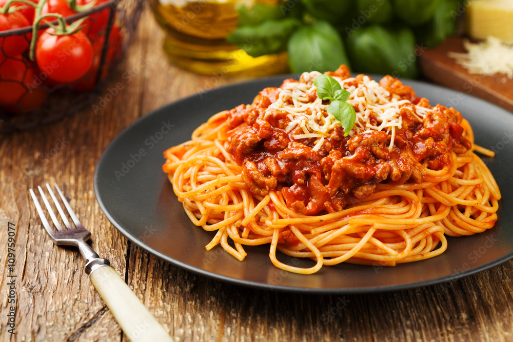

Spaghetti

Easy Weeknight Spaghetti
My family’s favorite weeknight friendly spaghetti recipe is quick and simple. The super flavorful spaghetti sauce is ready in 45 minutes and you can use your favorite ground meat to make it (beef, turkey, and chicken are all excellent).
Ingredients
- Spaghetti
- Ground Meat
- Tomatoes and Tomato Paste
- Onion, Garlic, and Spices
- Heat the oil. Add meat and cook until browned.
- Add onions and cook until soft.
- Stir in garlic, tomato paste, oregano, and red pepper flakes and cook for 1 minute.
- Pour in water and stir in tomatoees
- Cook uncovered for 25 minutes.
- About 15 minutes before sauce finishes cooking, cook pasta according to directions.
- Remove sauce and toss cooked pasta.